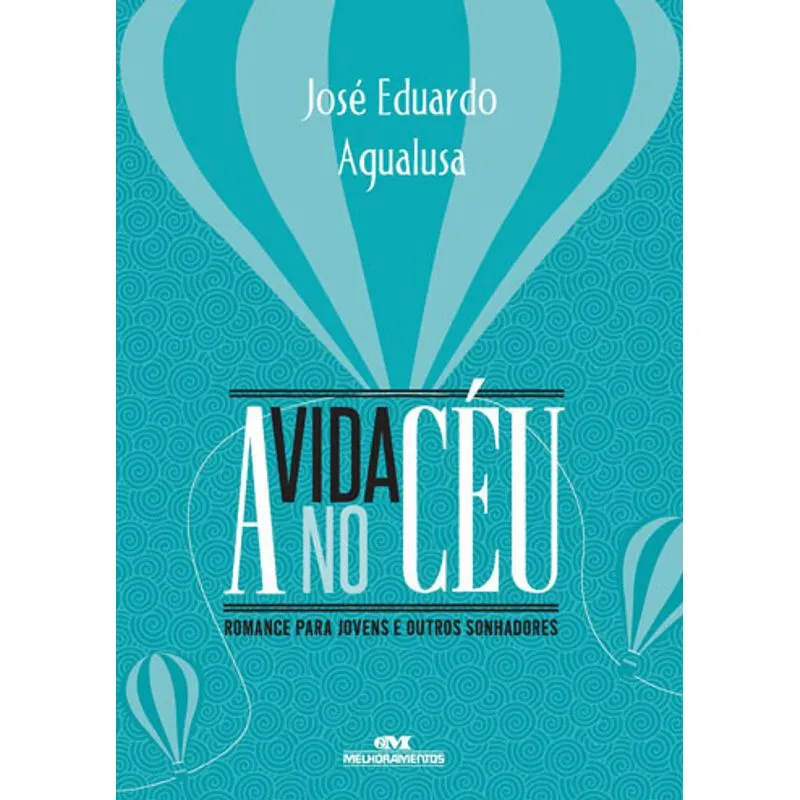
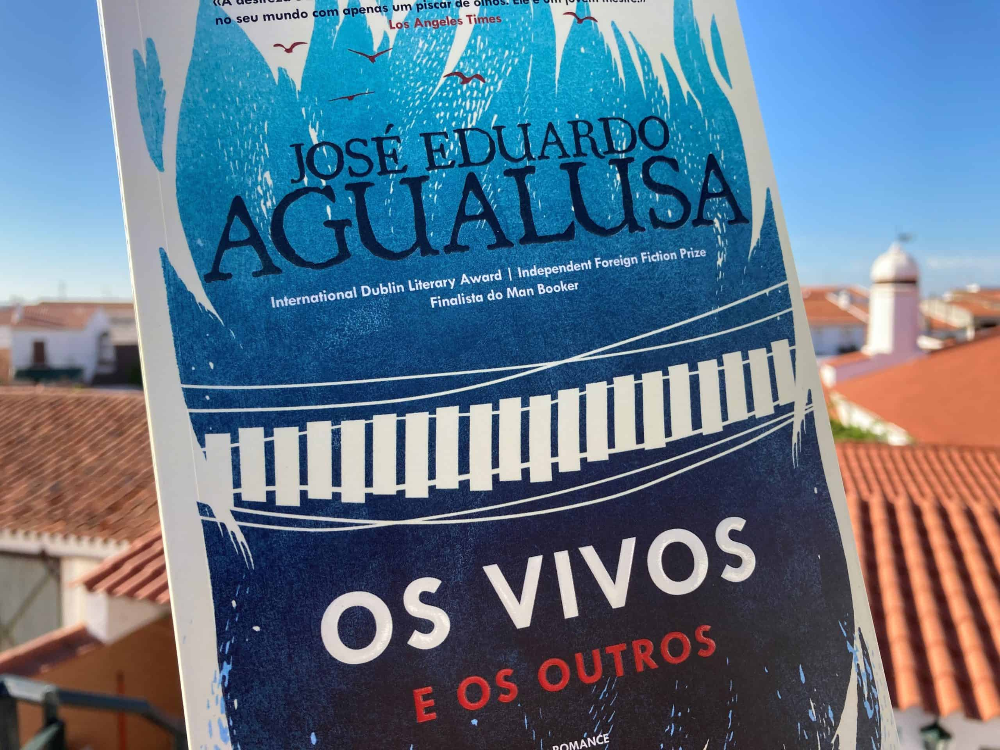

INÍCIO
AUTOR
OBRAS
DOWNLOAD
FRONTEIRAS PERDIDAS
🌙
Principais Obras
A Vida no Céu
— Uma distopia aérea sobre desigualdade e esperança.
Os vivos e os outros
— Escritores isolados enfrentam o limite entre vida e imaginação.
Fronteiras Perdidas
— Fragmentos sobre identidade e pertencimento.
 